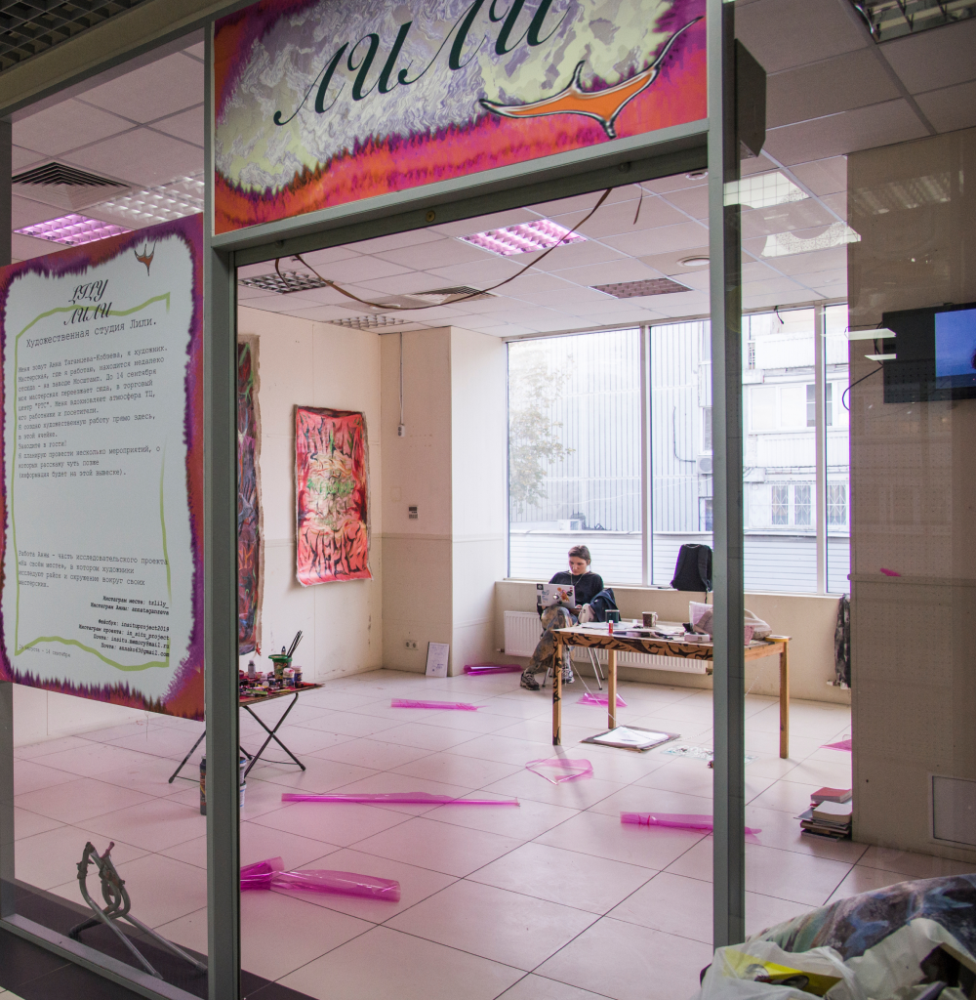

Проект-исследование
о месте художественных
мастерских в Москве



Есть ли у вас
мастерская?
78% | 36% |
| опрошенных считают, что художнику необходима мастерская | художников имеет мастерскую в данный момент |